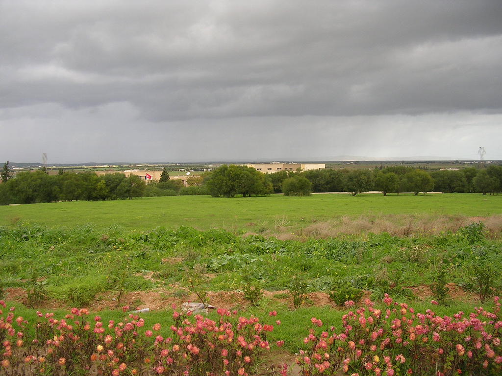
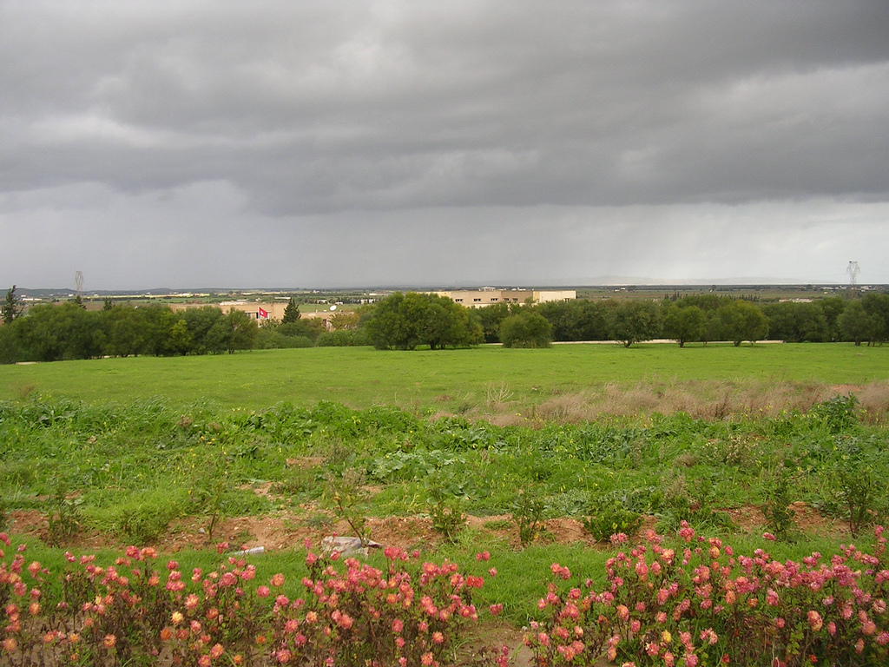

Le gouvernorat de l'Ariana, créé en mars 1983, est l'un des 24 gouvernorats de la Tunisie. Il est situé dans le nord du pays et abrite en 2014 une population estimée à 663 900 habitants. Il a une superficie de 482 km2, soit 0,3 % de la superficie du pays. Son chef-lieu est l'Ariana. En septembre 2000, la délégation de La Manouba (partie occidentale du gouvernorat) est élevée au rang de gouvernorat. Il fait partie du Grand Tunis avec les gouvernorats de Tunis, La Manouba et Ben Arous.

Les origines de la ville remontent aux Zirides. Le souverain hafside Abû `Abd Allah Muhammad al-Mustansir fait de l'Ariana la résidence de l'aristocratie musulmane et juive andalouse réfugiée en Tunisie au xiiie siècle. C'est aussi le lieu où vit et est canonisé Sidi Mahrez (saint patron de Tunis). La municipalité est instituée le 1er juillet 1908

L'Ariana doit sa renommée à son essor agricole et à sa production de fleurs, des roses principalement. Le Jardin de la Rose, situé dans le parc Bir Belhassen, couvre quelque 3 000 m2 et abrite 16 000 rosiers et boutures dont 90 % appartiennent à la variété dite « rose de l'Ariana ». Cette variété est introduite en 1637 par les Andalous. Le jardin se prolonge par la Galerie de la Rose qui développe les aspects historiques, naturels et culturels de cette fleur. Un festival de la rose se déroule tous les ans au printemps.


 
